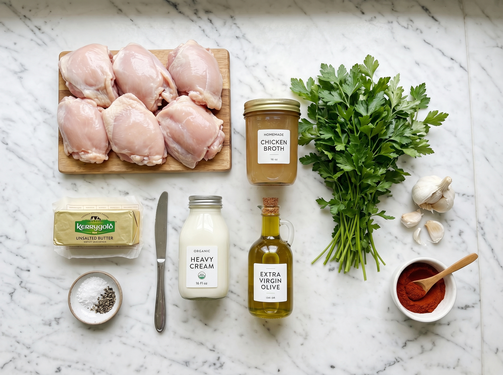
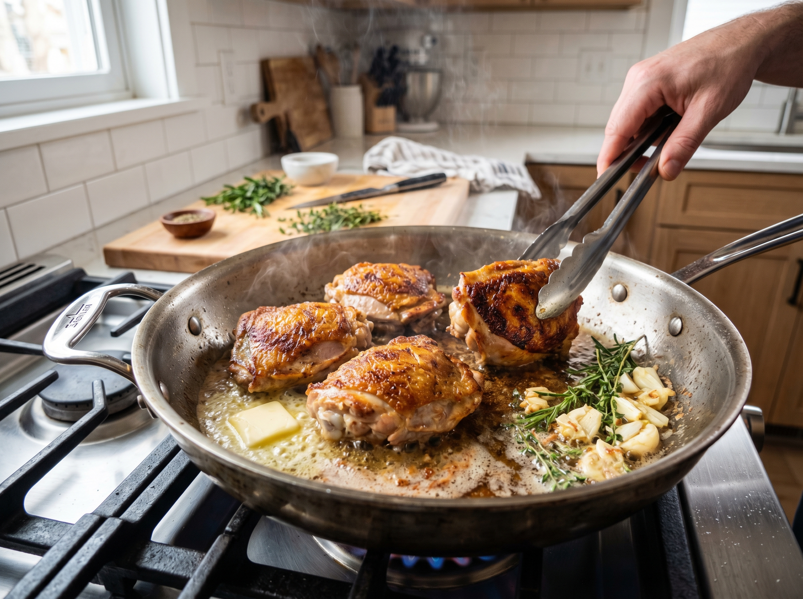
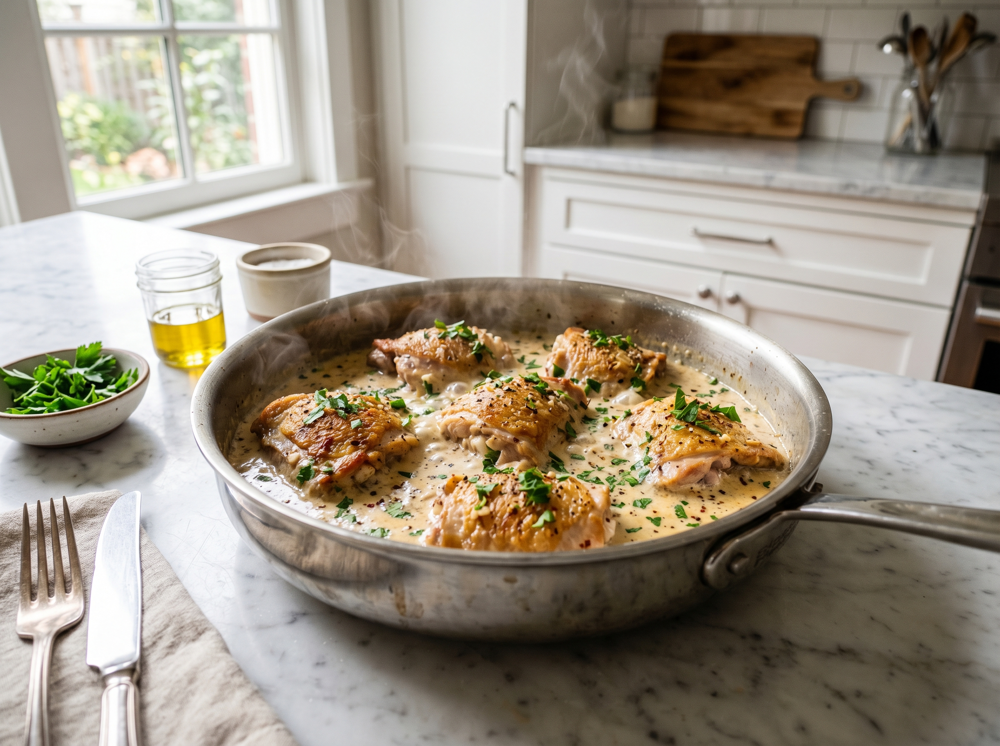

This creamy garlic chicken is the kind of weeknight dinner you'll make on repeat. Juicy, golden chicken thighs bathed in a velvety garlic cream sauce — all done in one pan, in just 30 minutes. The sauce is so good you'll want to pour it over everything.
I first made this on a rainy Tuesday when the fridge had almost nothing in it. Six cloves of garlic, some heavy cream, chicken thighs — and it turned out to be one of the most requested dinners in our house. It's the recipe I give to every friend who says they "can't cook," because if you can sear chicken and stir a sauce, you've got this.
Why You'll Love This Recipe
- One pan, easy cleanup — fewer dishes, more enjoying your evening
- Ready in 30 minutes — faster than ordering delivery
- Rich, restaurant-quality sauce — made with everyday pantry staples
- Budget-friendly — chicken thighs are inexpensive and stay juicy
- Family-approved — even picky eaters love the creamy sauce
Ingredients You'll Need
Everything here is available at any major supermarket — Whole Foods, Trader Joe's, Kroger, or even your local grocery store. Here's what makes each ingredient special:
- Chicken thighs — boneless, skinless. Thighs stay juicier than breasts under heat. Look for them in the meat section next to chicken breasts.
- Heavy cream — this is the same as heavy whipping cream you'll find at any US store. It gives the sauce that rich, velvety body.
- Fresh garlic — please use fresh cloves, not the jarred kind. The difference in a dish like this is night and day.
- Chicken broth — low-sodium works great. It deglazes the pan and adds depth without making the sauce too salty.
- Italian seasoning — a pre-mixed blend (basil, oregano, thyme, rosemary) found in the spice aisle of every US grocery store.
Kitchen Tools
- Large skillet or cast iron pan (12-inch / 30cm works perfectly)
- Tongs
- Measuring cups and spoons
- Instant-read meat thermometer (recommended)
- Garlic press or sharp knife for mincing
Easy Creamy Garlic Chicken
Golden pan-seared chicken thighs in a rich garlic cream sauce. One pan. 30 minutes. Pure weeknight magic.
Ingredients

Instructions
-
1
Season the chicken. Pat chicken thighs completely dry with paper towels — this is the key to a golden crust. Season generously on both sides with salt, black pepper, paprika, and Italian seasoning.
-
2
Sear to golden perfection. Heat olive oil in a large skillet over medium-high heat until it shimmers. Add chicken smooth-side down and press lightly to ensure full contact with the pan. Sear undisturbed for 5 minutes until deep golden brown. Flip and cook 4 more minutes. Transfer to a plate and loosely cover with foil.

-
3
Build the garlic base. Reduce heat to medium. Add butter to the same pan. Once melted, add minced garlic and stir constantly for 60 seconds until golden and fragrant. Watch it closely — burnt garlic turns bitter fast.
-
4
Deglaze and add cream. Pour in chicken broth and scrape the bottom of the pan with a wooden spoon — those browned bits (called "fond") are pure flavor. Pour in the heavy cream, stir to combine, and bring to a gentle simmer.
-
5
Finish and serve. Return chicken and any resting juices to the pan. Simmer on medium-low for 5–7 minutes, spooning sauce over the chicken, until the sauce thickens to coat a spoon and chicken reaches 165°F / 74°C. Taste and adjust salt. Garnish with parsley and Parmesan. Serve right away.
Pro Tips for Perfect Creamy Garlic Chicken
- Dry the chicken. Patting it dry with paper towels removes surface moisture, giving you a golden sear instead of steaming the chicken in its own liquid.
- Don't move the chicken. Resist the urge to poke or shift it during searing. It will naturally release when it's ready to flip.
- Room temperature chicken. Take chicken out of the fridge 15 minutes before cooking for more even cooking throughout.
- Thicken the sauce. If your sauce is too thin, mix 1 teaspoon cornstarch with 2 teaspoons cold water and stir it in. It thickens in seconds.
- Don't boil the cream. Keep it at a gentle simmer — a rolling boil can cause the sauce to separate.
Variations to Try
- Dairy-free: Replace heavy cream with full-fat coconut cream. The flavor is slightly different but equally rich and delicious.
- Gluten-free: This recipe is naturally gluten-free as written — just double-check your chicken broth label.
- Spicy version: Add ½ teaspoon red pepper flakes with the garlic for a gentle heat that plays beautifully with the cream.
- Sun-dried tomato: Stir in 2 tablespoons of chopped sun-dried tomatoes with the garlic for a Tuscan twist.
- Mushroom garlic chicken: Add 8 oz (225g) sliced mushrooms after the garlic and cook for 3 minutes before adding the broth.
Serving Suggestions

This saucy chicken pairs beautifully with anything that can soak up that incredible cream sauce:
- Mashed potatoes (the classic choice — the sauce acts like a gravy)
- Pasta (linguine or fettuccine work great)
- White rice or cauliflower rice for a lighter option
- Crusty bread for sauce-scooping
- Roasted asparagus or green beans on the side
- Steamed broccoli (kids love dipping it in the sauce)
Storage & Reheating
Refrigerator
Store in an airtight container for up to 4 days.
Freezer
Cream sauces can separate when frozen. Best eaten fresh or refrigerated. If freezing, store up to 2 months and stir well when reheating.
Reheat
Warm gently in a skillet over low heat, adding a splash of cream or broth to loosen the sauce. Avoid the microwave if possible — it can make the chicken rubbery.
Frequently Asked Questions
Can I use chicken breasts instead of thighs?
Yes! Chicken breasts work fine, but they cook faster and can dry out more easily. Pound them to an even ½-inch thickness, and reduce the searing time to 3–4 minutes per side. Use a meat thermometer to hit 165°F / 74°C exactly — don't go over.
Can I make this ahead of time for meal prep?
Absolutely. This reheats beautifully over 4 days. Store the chicken and sauce together in an airtight container. When reheating, add a splash of chicken broth to the pan to bring the sauce back to its original silky consistency.
What can I substitute for heavy cream?
Half-and-half will work but gives a thinner sauce. Full-fat coconut cream is the best dairy-free substitute. Avoid milk or light cream — the sauce won't thicken properly and may separate.
Why is my cream sauce not thickening?
The sauce thickens as it reduces — it needs 5–7 minutes of gentle simmering. Make sure you're not cooking on too high a heat (this causes it to boil too fast and can separate). If you need it thicker quickly, mix 1 tsp cornstarch with 2 tsp cold water and stir it in — it'll thicken within a minute.
Where can I find Italian seasoning in US grocery stores?
Italian seasoning is in the spice aisle of every major US grocery store — Kroger, Walmart, Whole Foods, Trader Joe's. McCormick and Spice Islands are the most common brands. It's a pre-mixed blend of basil, oregano, thyme, and rosemary.
Can I add vegetables to this dish?
Yes! Baby spinach wilts beautifully into the sauce in the last 2 minutes of cooking. Sliced mushrooms can be added after the garlic step. Cherry tomatoes added with the cream burst and add brightness to the dish.
Nutrition Information
Per serving (1 chicken thigh with sauce). Values are estimates.
| Nutrient | Amount per Serving |
|---|---|
| Calories | 480 kcal |
| Total Fat | 32g |
| Saturated Fat | 14g |
| Protein | 38g |
| Carbohydrates | 6g |
| Fiber | 0g |
| Sugar | 2g |
| Sodium | 520mg |
Did You Make This Recipe?
I'd love to hear how it turned out! Leave a star rating below and drop a comment — tell me what you served it with. And if you're on Pinterest, save this recipe so you can find it again easily!
📌 Save This Recipe on Pinterest